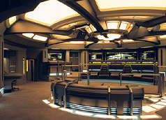
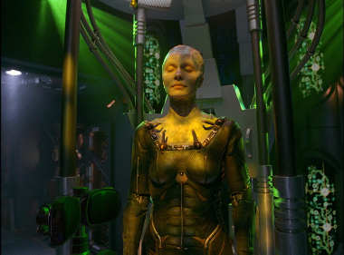
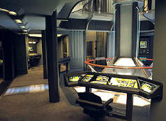
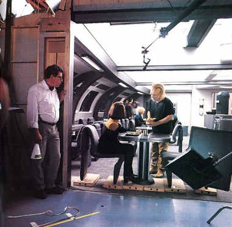
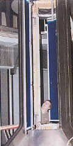

|
por Daniel Sasaki
Os fs de Jornada nas Estrelas so,
possivelmente, os mais exigentes e precisos que h. Eles no
deixam passar nenhum detalhe despercebido, esteja ele relacionado
aos roteiros ou produo. Embora a quarta srie da franquia,
Voyager, tenha tido ao longo de seus sete anos a qualidade
dos episdios questionada por muitos, certamente o mesmo no
aconteceu quando o foco da discusso era a qualidade de seus
cenrios. E h motivos para isso. As equipes de criao e
produo asseguraram que mesmo os trekkers mais reacionrios
admirassem o que viam. Confira neste artigo duplo tudo o que h
para saber sobre o assunto - do projeto demolio.
Os cenrios
fixos
 Quase
sempre que se realizavam as gravaes da srie, as praticidades
e o oramento das locaes eram cuidadosamente pesados, para
que de fato pudessem ser feitos o desenvolvimento e a descrio
da histria. Os cenrios fixos - ou permanentes - de Voyager eram
aqueles usados com mais freqncia, como a ponte de comando, que
aparecia em todos os episdios. Alm disso, certos roteiros
pediam a construo de cenrios que retratassem, por exemplo,
um aposento em um mundo aliengena ou o interior de uma nave.
A roteirista Lisa Klink explica, sobre o
episdio "Resistance":
"O oramento tambm era um problema, porque geralmente
construmos dois cenrios novos, mas aqui tudo se passa em um
planeta aliengena. Eles tm que comear em um lugar e terminar
em outro, e estes so os nossos dois cenrios. Eles vo para
algum outro lugar? Ento temos que construi-lo tambm...
Acabamos construindo trs cenrios: uma praa, a priso e uma
cabine (o quarto do personagem Caylem). Tentamos de todas as
formas ambientar [o roteiro] no set da caverna, que um cenrio
fixo, mas no conseguimos. Foi um episdio terrivelmente
caro".
Do ponto de vista de um produtor de TV, o
chamado "bottle show" requer comparativamente o menor
dos preparos; o termo refere-se aos segmentos em que apenas os cenrios
fixos so usados. Eles so mais econmicos em relao ao
tempo, dinheiro e esforo, j que no h novos sets para
projetar, construir, equipar e iluminar, e a equipe de produo
j conhece as logsticas, como a iluminao e os ngulos da cmera.
Por exemplo, o episdio-duplo "Unimatrix Zero" pediu
o uso de vrios cenrios novos (conhecidos como "swing
sets"), e diversas seqncias em CGI (grficos gerados por
computador). Em adio, parte do custo mais alto correspondia
contratao de diversos atores convidados e figurantes, e
maquiagem e figurino necessrios (a destacar, a dispendiosa criao
de drones Borgs). Alm da questo dos recursos e custos, a
equipe de produo ainda dedicou tempo e esforos adicionais a
seu ritmo de trabalho, que, comumente, j era rigoroso. Por
conseguinte, no difcil imaginar por que o episdio
anterior, "The Haunting of Deck Twelve", era um
"bottle show", cujos gastos limitaram-se escalao
do elenco-mirim (as crianas Borgs) e poucos efeitos visuais (a
presena aliengena a bordo). Os "bottle shows" de Voyager
tinham, ainda, outra vantagem. Eles geralmente se concentravam
na interao entre personagens e no seu desenvolvimento - algo
que costumava ser deixado de lado na srie.

A Rainha Borg (Susanna Thompson),
em "Unimatrix Zero".
Lolita Fatjo, co-produtora e coordenadora de
pr-produo (temporadas 1-6) e coordenadora de roteiros
(temporada 6), disse:
"Uma coisa que sempre bem-vinda
o que chamamos de "bottle shows', o que significa que tudo
acontece inteiramente na nave, ou na estao, ou na USS Defiant.
Um "bottle show" significa que podemos economizar
dinheiro por no termos que construir novos sets, trazer grandes
personagens convidados, fazer cenas de batalha, ou qualquer coisa
do tipo. A maior parte dos "bottle shows" so
orientados nos personagens. apenas um modo de segurar o oramento
dos episdios. Ento, escrever um bom "bottle show"
sempre um bom caminho a seguir" (Fonte: Star Trek Monthly)
Quanto aos cenrios fixos, a Plataforma 8
da Paramount Pictures/Viacom abrigava a ponte de comando, sala da
capit e sala de reunies, alm do refeitrio e da cozinha
anexa (na TV, observa-se que a ponte e as duas salas so
diretamente ligadas, o que, de fato, tambm acontecia atrs das
cmeras). J a Plataforma 9 continha a rea de carga e a
engenharia principal, alm de cenrios temporrios que eram
construdos para episdios especficos e, depois, destrudos.
Essa rea da Paramount tem sido o lar de Jornada
nas Estrelas desde 1977, quando Gene Roddenberry e o estdio
preparavam o lanamento da srie Jornada nas Estrelas: Fase
II. Embora os cenrios fixos para aquele seriado tivessem
sido erigidos nas plataformas 8 e 9, eles nunca foram utilizados.
Na verdade, a franquia acabou indo para o cinema, de modo que, aps
uma reciclagem, os sets foram usados em Jornada nas Estrelas -
O Filme. Novas reciclagens eram empreendidas a cada novo
filme, at que, com o lanamento de Jornada nas Estrelas: A
Nova Gerao em 1987, as plataformas passaram a abrigar cenrios
verdadeiramente fixos.
 Depois
das filmagens do ltimo episdio daquela srie no incio de
1994, os cenrios foram mais uma vez adaptados para a gravao
de Jornada nas Estrelas - Generations e, assim que se
amarrou a produo no final de maio daquele mesmo ano, os
cenrios de A Nova Gerao foram finalmente demolidos
para dar lugar aos de Jornada nas Estrelas: Voyager, que
foram confeccionados literalmente no mesmo local que os
anteriores; a ponte da Voyager, por exemplo, ocupava o mesmo espao
da da Enterprise-D, assim como os corredores, a sala de transporte
e a engenharia.
Rick Sternbach, o ilustrador e projetista de
Voyager, comentou sobre isso:
"Uma vez que [A Nova Gerao] tinha acabado, ns
reconstrumos os cenrios para o filme. Uma vez que o filme
terminou, o processo comeou do zero de novo. Rasgar, martelar,
cortar, demolir. E a Voyager nasceu. Minha primeira exposio a Jornada
foi em 1978, trabalhando no primeiro filme. Eu j vi essa cena
muitas vezes."
Richard James, o projetista dos cenrios
interiores de Voyager, ateve-se a um conceito muito
particular, usado em todos os outros seriados de Jornada:
os sets das produes televisivas tpicas tm apenas trs
lados; raramente eles tero uma quarta parede que os torna em
salas fechadas, e a cmera filma de onde a parede que falta
estaria. Mas, em Jornada nas Estrelas, a maior parte dos
cenrios fixos tm seis lados: quatro paredes, um piso
inteiramente detalhado e um teto inteiramente detalhado. Assim, o
trabalho extra envolvido na construo e planejamento das logsticas
compensavam pelo fato de esses cenrios transmitirem ao
telespectador um incrvel senso de realismo: no importa o ngulo
do qual a cmera filme, sempre haver uma sensao de
complemento. Contudo, os cenrios foram tambm projetados para
ter paredes que pudessem ser removidas, caso a cmera precisasse
ser posicionada em certos lugares.

A chamada "wild wall",
parede que compe um cenrio fixo, mas pode ser removida.
Em Voyager, a construo dos cenrios
fixos originalmente visava compreender aqueles que j haviam sido
estabelecidos nas sries anteriores: a ponte, a engenharia
principal, a enfermaria, a sala de reunies e o alojamento da
tripulao - este, com um desenho modular adaptvel a cada
indivduo. O uso contnuo desses aposentos no se tratava - e
ainda no se trata - de falta de inspirao ou imaginao; os
fs adoram e inclusive esperam a sua presena, muito embora
esperem tambm uma atualizao de conceitos e originalidade. A
Nova Gerao introduziu a sala do capito frmula,
portanto a sala da capit Janeway faria parte dos cenrios
permanentes, como tambm o fariam o refeitrio e, mais tarde, o
holodeck e o laboratrio de astromtricas.
Em entrevista ao Trek Brasilis em 2
de maio de 2001, Rick Sternbach comentou:
"No to difcil criar novas aparncias se voc
entende o material com que est comeando. um pouco uma questo
de balancear, entre inventar algo muito, muito novo que talvez
seja um pouco radical demais e inidentificvel, e algo que parece
bastante com as velhas coisas que j vimos. Alguns dos melhores
designs deveriam te remeter, ao menos subconscientemente, a algo
anterior".
Cenrios
"fold and hold" & "swing"
Por motivos prticos, devido falta de espao, qualquer set
necessrio para cenas no holodeck eram construdos na Plataforma
16. As plataformas 8 e 9 simplesmente no tinham como acomodar
novos ambientes. Como alguns desses cenrios eram usados com
certa periodicidade, eles eram desmontados e armazenados em uma
localidade fora do lote para reutilizao posterior (da o nome
"fold and hold sets"). Um exemplo disso a casa usada
na novela hologrfica gtica de Janeway, vista nos primeiros
episdios da srie. J os cenrios de uso nico e imediato,
em episdios especficos, so chamados de "swing
sets" e tambm costumavam ser construdos na Plataforma 16.
"Endgame"
e a demolio dos cenrios fixos
Com o fim da srie em vista,
entre maro e abril de 2001, os cenrios fixos de Voyager comearam
a ser demolidos. Em certas instncias, eles foram substitudos
por sets que incorporaram o episdio final da srie, "Endgame".
Raramente em Jornada nas Estrelas os elementos que compem
os cenrios so aproveitados. Com a exceo de pequenos
objetos e itens de decorao, tudo simplesmente destrudo
por tratores.
 Sobre
essa questo, o cartgrafo estelar de Jornada, Geoff
Mandel, disse em entrevista exclusiva ao Trek Brasilis em
14 de setembro de 2002:
"Os cenrios de Voyager poderiam ser reconstrudos
do nada em uma semana se houvesse uma necessidade para eles --
todas as plantas existem, e se h uma coisa que a equipe de
construo de Jornada sabe fazer, recriar cenrios de
episdios anteriores. Como um exemplo, ns reconstrumos a cmara
da Rainha Borg do nada no uma, mas duas vezes, enquanto eu
trabalhei para Voyager: para "Unimatrix Zero" e
ento para "Endgame". Seria muito caro manter
cenrios como aquele montados por meses seguidos s para o caso
de voc ter a oportunidade de us-los! Tambm, voc precisa
lembrar que os cenrios em si so relativamente finos --
basicamente madeira compensada, dois por quatro, e tinta. Eles no
durariam muito em uma atrao de trfego pesado como a
"Star Trek: The Experience", e de fato todos os cenrios
da Enterprise-D em Las Vegas tiveram de ser reprojetados com
suportes de ao e materiais "do mundo real". Mesmo os
adesivos foram protegidos por coberturas de Plexiglas!"
O processo de
demolio
Foi gradual, porm rpido, o
processo de desmantelamento dos cenrios fixos da srie. Ele se
deu nas seguintes etapas:
 22 de maro de 2001 - O laboratrio de cincias da
Voyager estava sendo demolido; tratores grandes pararam ao lado da
Plataforma 9 e a equipe de demolio teve um dia cheio,
removendo toda a madeira contraplacada e o Plexiglas. A idia era
abrir espao para os cenrios do ltimo episdio da srie, "Endgame".
22 de maro de 2001 - O laboratrio de cincias da
Voyager estava sendo demolido; tratores grandes pararam ao lado da
Plataforma 9 e a equipe de demolio teve um dia cheio,
removendo toda a madeira contraplacada e o Plexiglas. A idia era
abrir espao para os cenrios do ltimo episdio da srie, "Endgame".
26 de maro de 2001 - Esse foi o ltimo dia de filmagens
no cenrio do refeitrio, que, aparentemente, comeou a ser
demolido momentos mais tarde.
28 de maro de 2001 - Foi filmada a ltima cena na sala
da capit, talvez aquela em que a personagem interage com a sua
contraparte do futuro em "Endgame". O cenrio
foi ento adaptado para abrigar a sala do capito da USS Rhode
Island, que inclua um grande painel iluminado da galxia
produzido por Geoffrey Mandel.
29 de maro de 2001 - Na Plataforma 8, as equipes
demoliram o refeitrio e os aposentos da capit, que tinham sido
temporariamente convertidos na cabine de Harry Kim na USS Rhode
Island. O turboelevador tambm foi destrudo, assim como o
corredor que levava a ele. O campo de estrelas (na verdade, um
tecido preto coberto com pequenos pedaos de alumnio) foi
retirado, como tambm o foram a tela verde (usada para as
seqncias de efeitos visuais) e a grade de luzes. Na Plataforma
9 foi construdo um quarto de hospital, no qual Tuvok estava
sendo tratado em "Endgame". Esse set foi erigido
no espao deixado pelo laboratrio de cincias. Tambm na
Plataforma 9, todos os painis de controle e monitores iluminados
estavam faltando no cenrio da engenharia.
30 de maro de 2001 - Outro cenrio
"swing" foi construdo prximo aos destroos do
refeitrio: uma parte da ponte de comando da USS Rhode Island.
Foi o primeiro cenrio de ponte feito por Geoffrey Mandel, que
disse estar "irracionalmente orgulhoso dos grficos que
piscavam". Ele acrescentou: " medida que entrava na
plataforma, as luzes pareciam muito brilhantes, e de repente eu
percebi que as enormes portas da Plataforma 8 estavam abertas
luz do sol. Pela primeira vez em 14 anos voc podia ficar em um
lado da plataforma e ver o outro lado!"
3 de abril de 2001 - O refeitrio e os aposentos da capit
se foram completamente - at mesmo os carpetes e tbuas do piso
haviam sido arrancados. A equipe de construo recolocou e
pintou o piso. A placa dedicatria da Voyager (instalada em uma
parede da ponte) foi removida. Mandel conta: "Nenhuma
surpresa, considerando o excelente souvenir que daria". Alm
disso, um grupo de executivos da Paramount posaram para algumas
fotos na cadeira da capit. Na Plataforma 9, a equipe de
construo aplicou alavancas e parafusadeiras no nvel superior
da engenharia. Enquanto jogavam toneladas de madeira pintada e
metal no andar de baixo, ouviam msicas antigas no rdio. O
ncleo do reator ficou por mais algum tempo, mas sem o seu
revestimento, revelando todo o seu interior oco.
5 de abril de 2001 - O cenrio da engenharia da Voyager
agora no passava de uma armao de madeira. Comeou a
demolio da rea de carga/hangar/holodeck, que formavam um
nico set - o qual havia permanecido praticamente intocado desde A
Nova Gerao. As alcovas de regenerao Borgs foram
empacotadas e colocadas em um armazm, para possvel uso futuro.
6 de abril de 2001 - Foi realizada uma festa surpresa para
os membros da equipe de produo de Voyager que estavam
se aposentando, como o designer Richard James. Para dar um maior
senso de irrealidade, os figurinistas colocaram vrios objetos
gigantes por todo o cenrio iluminado da ponte, como uma enorme
roleta, um sarcfago egpcio e uma taa de Martini. Elenco e
equipe inteiros sentaram-se a mesas dobrveis ricamente cobertas
com toalhas prateadas e douradas. Os Borgs que havia participado
das filmagens de "Endgame" tambm estavam l,
como tambm estava Alice Krige (inteiramente vestida de Rainha
Borg), ao lado de Jeri Ryan e Robert Beltran.
9 de abril de 2001 - Esse foi o ltimo dia oficial de
filmagens. A equipe da segunda unidade ainda tinha algumas cenas
para terminar, mas, de forma geral, foi o ltimo dia para a maior
parte deles, inclusive os atores. Alguns membros da equipe de
produo, como os artistas cnicos Michael Okuda e Jim Van Over,
j haviam comeado a trabalhar na nova srie [Enterprise].
Na Plataforma 8, foram filmadas as ltimas cenas na ponte de
comando, mas, ao mesmo tempo em que se filmava, o esqueleto da nova
nave Enterprise j estava se levantando onde o refeitrio da
Voyager e os aposentos da capit uma vez ficaram. Anteparos e
vos de portas j estavam posicionados para abrigar os novos
corredores.
Reprteres e equipes de
filmagens ficaram seguindo os atores por todos os lugares,
relatando o ltimo dia de trabalho, embora o elenco parecesse
indiferente ao destino dos cenrios.
11 de abril de 2001 - A festa de encerramento de Jornada
nas Estrelas: Voyager foi realizada no 'W', um hotel em Los
Angeles. Algumas personalidades da franquia estavam presentes como
John de Lancie (Q), Majel Barrett Roddenberry (viva do criador
da srie original, personagem recorrente e a voz do computador),
Chase Masterson (Leeta, em Deep Space Nine), Armin
Shimerman (Quark, em Deep Space Nine) e Brent Spiner (Data,
em A Nova Gerao).
23 de abril de 2001 - O ltimo episdio da srie foi
exibido nos Estados Unidos. O prefeito de Los Angeles declarou
oficialmente o Dia Jornada nas Estrelas: Voyager.
Na segunda parte do artigo,
confira detalhadamente como foi a criao e construo da
ponte de comando, engenharia principal, sala de transporte,
enfermaria, sala da capit, sala de reunies, refeitrio,
corredores e alojamentos da tripulao. Dados
extrados do Janet's
Star Trek: Voyager Site
|